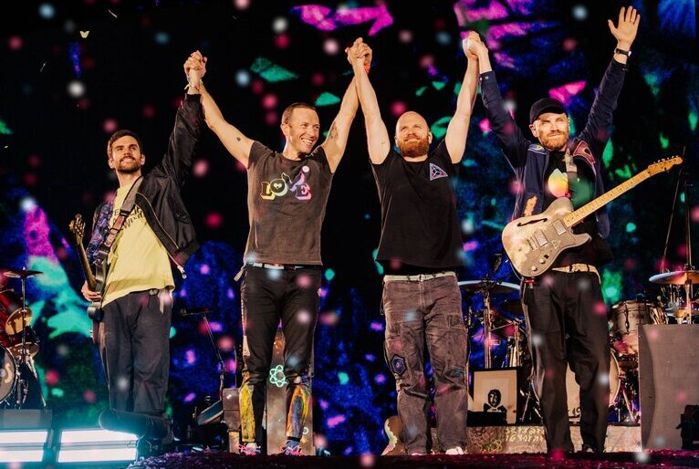

cold play
historia e curiosidades

hitoria
- Os membros do Coldplay se conheceram na Universidade de Londres em 1996. Os primeiros membros da banda foram o cantor e pianista Chris Martin e o guitarrista Jonny Buckland, e a banda se chamava Pectoralz. O segundo nome da banda era Starfish, depois que Guy Berryman se juntou à banda como baixista. O próximo a se juntar à banda é Will Champion, como backing vocal e baterista, mesmo sem nenhuma experiência instrumental. O nome Coldplay ficou conhecido em todo o mundo quando o amigo de Chris, Tim Crompton, já havia sugerido que o achava “excessivamente deprimido”. O nome vem de um livro de Philip Hokey. Antes de lançar seu primeiro álbum, a banda gravou três EPs: Safety em 1998, Brothers & Sisters e The Blue Room em 1999. Este último foi o primeiro grande lançamento da banda depois de assinar com a Parlophone.
albuns e singles
1 O nome não seria esse
Coldplay não é o nome original do grupo, antes de ser conhecido como Starfish. Aliás, o título atual vai nomear a banda de amigos de um de seus integrantes. Mas o músico descobriu a palavra “melancolia” e achou melhor procurar outra solução. Por sua vez, Chris Martin e sua turma decidiram investir na ideia e adotaram o nome em 1998.
2 Baterista Autodidata
Will Champion foi o último membro a se juntar à banda em 1997. Na época, ele não tinha experiência com instrumentos relacionados quando assumiu o cargo. No entanto, ele rapidamente dominou a bateria.
3 Vocalista aplicado
Além de talentoso, Chris Martin também é estudioso. Ele está se formando em Estudos do Mundo Antigo na University College London (UCL). Antes disso, no ensino médio, ele ficou em primeiro lugar em sua classe em latim.
4 “Ysae saw ti dias ydobon”
Para o vídeo do hit The Scientist (o começo é o começo e o começo é o fim), o cantor Chris Martin teve que aprender a letra ao contrário. A razão é simples: os clipes são gravados da frente para trás.
5 Fantasia de Elefante
No clipe do hit Paradise, o homem fantasiado de elefante é o próprio Chris Martin.
6 Igualdade
Os lucros da banda são divididos de forma igual entre todos os integrantes.
7 Pulseira que valem ouro
Durante a Mylo xyloto tour, foram disponibilizadas pulseiras com brilho, durante o show, detalhe que custou cerca de 4 milhões de reais ao orçamento da banda.
8 Fã ilustre
Ninguém mais e ninguém menos que o próprio Barack Obama, o ex-presidente americano, já se declarou fã de carteirinha da banda.
9 Filantropia
No término da turnê Viva La Vida, em 2009, a banda arrecadou mais de 250 mil euros em doações, com leilão de itens da banda.
10 Bakery
A Bakery, estúdio do Coldplay localizado em londres, possui esse nome, pois antigamente este prédio era destinado a uma padaria.